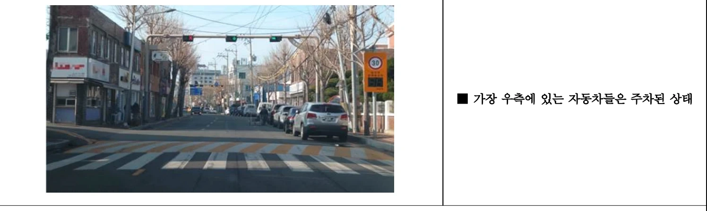

685. 다음 상황을 통해 알 수 있는 정보와 이에 따른 올바른 운전방법을 연결한 것으로 바르지 않은 것 2가지는?

- ①횡단보도 – 좌우를 잘 살펴 보행자에 주의한다.
- ②차도에 있는 사람 – 속도를 감속하는 등 안전에 유의한다.
- ③가로형 이색등 – 적색 X표가 있는 차로로 진행한다.
- ④가변차로 – 상황에 따라 진행차로가 바뀔 수 있다.
- ⑤중앙에 설치된 황색 점선 – 앞지르기하려고 할 때도 절대 넘을 수 없는 선이다.
정답 보기
정답
③ 가로형 이색등 – 적색 X표가 있는 차로로 진행한다.
⑤ 중앙에 설치된 황색 점선 – 앞지르기하려고 할 때도 절대 넘을 수 없는 선이다.
근거·해설
시ㆍ도경찰청장은 시간대에 따라 양방향의 통행량이 뚜렷하게 다른 도로에는 교통량이 많은 쪽으로 차로의 수가 확대될 수 있도록 신호기에 의하여 차로의 진행방향을 지시하는 가변차로를 설치할 수 있다(도로교통법 제14조 제1항). 가변차로로 지정된 도로구간의 입구, 중간 및 출구에 가로형 이색등을 설치한다(도로교통법 시행규칙 [별표 3]). 녹색화살표의 등화(하향)일 때 차마는 지정한 차로로 진행할 수 있고, 적색X표 표시의 등화일 때는 그 차로로 진행할 수 없다(도로교통법 시행규칙 [별표2]). 중앙선 중에 황색실선은 차마가 넘어갈 수 없는 것을 표시하는 것이고, 황색점선은 반대방향의 교통에 주의하면서 일시적으로 반대편 차로로 넘어갈 수 있으나 진행방향 차로로 다시 돌아와야 함을 표시하는 것이다(도로교통법 시행규칙 [별표6] 일련번호 501).